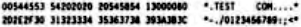

Scorpio News |
October–December 1987 – Volume 1. Issue 4. |
| Page 18 of 55 |
|---|
If we analyse this program and take the binary equivalence of the numbers, this program explains, in precise terms, the relationship between BLM and BSH.
Imagine that the number entered for X is 273. Follow the sequence below:
0000000100000111 | ; 273 in binary (16 bit) |
0000000011111111 | ; 255 in binary |
0000000000000111 | ; 7 (Result of logically ANDing the two |
| ; values together) = P1 | |
0000000100000111 | ; 273 again |
^ | ; This bit has the value 256 (2^8) |
0000000000000001 | ; 1 (Result of integer dividing by |
^ | ; 256) = P2 |
In the division, the 256 bit (2^8) has moved to the 1 position (2^0). In effect we have shifted the number 8 places. Another way of looking at it is that we have right shifted the number log2 of 256 places.
ln the example DPB given, BLM has a value of 31 and BSH has a value of 5. Their use is exactly the same as in the BASIC program.
Imagine that we wish to read a 128 byte record from disk and that record is number 43 in extent 18 of file we are reading. Assume that the correct directory entry is available and that it looks something like the one given below.
We shall use the valves for the Gemini QDDS format in this example and so we can see that the directory entry controls four extents. For convenience we shall number the extents 0 to 3. Extent 0 has blocks 2D, 2E, 2F and 30 allocated to it; extent 1 has blocks 31, 32, 33 and 34 and so on for the remaining two extents. Within each extent, we shall also umber the block positions from 0 to 3 for convenience.
Since we are using a 4K block size, each block will contain 32 CP/M records of 128 bytes each. We shall number those records 0 to 31.
If we logically AND the required extent (18) with the extent mask we obtain the value 2. This means that the record we require is contained in the extent numbered 2 in our directory entry. i.e. the record is held in one of blocks 35, 36, 37 or 38.
If we now take the record number (43) and right shift it BSH (5) times, we are left with the value 1. The block in position 1 is in fact number 36 on the disk.
All we need to do now is to determine where in block 36 the particular record we require is located. This is achieved by ANDing the record number with the block mask. The result of ANDing the record number (43) with BLM (31) is 11. Therefore, the record we require is the 12th record in the block.
The value DSM contains the number of blocks on the disk less one. Another way of looking at it is that it bolds the number of the highest block since the blocks are numbered from 0 to DSM or, in our case 0 to 196 (0-0C4H).
| Page 18 of 55 |
|---|